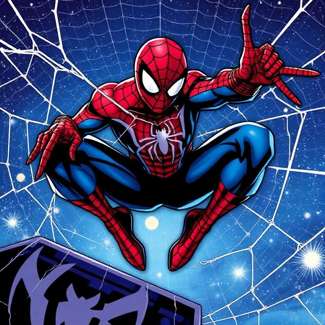

Full Story
Insomniac Games is back with a bold follow-up that expands the story and the city. Spider-Man 2 brings upgraded traversal mechanics, larger set pieces, and a deeper story focused on the partnership and rivalry between Peter Parker and Miles Morales.
The sequel introduces new enemy factions and a roster of fan-favorite villains reimagined with modern visuals and advanced AI. Players can expect a campaign filled with cinematic encounters, side content across New York neighborhoods, and expanded cooperative moments that highlight both heroes' unique playstyles.
From web-swinging through densely populated streets to high-impact boss battles on rooftops, Spider-Man 2 aims to deliver a more dynamic, expressive, and connected superhero experience.
Key Details
Why We're Hyped
- Expanded traversal and new web gadgets
- More dynamic side content and location variety
- Improved enemy AI and cinematic boss encounters